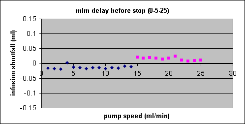

2nd phase 25ml/min
3rd phase variable

2nd phase 5ml/min
3rd phase variable


2nd phase variable
3rd phase 25ml/min
2nd phase variable
3rd phase 5ml/min
2nd phase 5ml/min
3rd phase 25ml/min


2nd phase 25ml/min
3rd phase 5ml/min

The harvard pumps can report the volume they think they've just infused. The volume the pump should have infused can be calculated given a particular profile. The difference between these two numbers can be used as an indicator of just how well the software is controlling the pump activity.
Wrote a couple batch scripts to run a series of infusions to test how the control software performed under various conditions. The vax program pump_play_loop.com is a wrapper that hands a series of infusion profiles to pump_play.com one at a time. pump_play.com was built up from all the important bits from of the real vax pump programs (pump.com and pump_bld.com) that drive the pumps but none of the parts that create infusion profiles. Similarly, pump_play.pl hands a series of infusion profiles to the perl subroutine that will drive the pumps.
Each test was a three phase infusion with a slow phase (5ml/min), a fast phase (25ml/min) and a phase where the infusion rate was incremented from 1ml/min to 25ml/min. These were tried in every combination with the control software in a number of different configurations.
The full results can be found in the volume test spreadsheet. Summary graphs are shown below. Positive values mean the patient did not get the full dose. In all cases, the error fell between +/- 0.15 ml.
The vax charts show the old vax pump control software in its default state. The positive slopes suggest the final phase may be cut short by a few tenths of a second. The negative sloops, on the other hand, may mean the final phase run a little longer than it should in a couple cases. The discontinuities suggest the pump has some extra (possibly mechanical) overhead in switching between certain speeds.
The baseline charts show the new unix-based control software in its default state. Start time is taken just before the run command is issued. The program loops something like 200,000 times a second checking the time and writing progress reports every second or so. At the appropriate times, it issues a change speed or a stop command. The general shapes of the curves and the magnitude of the errors are both comperable to the vax trials with two exceptions. The unix program doesn't have negative slopes which means they don't over infuse as the vax program does in some situations. The unix unix program also don't have as many negative datapoints which means, again, they don't over infuse as much as the vax program sometimes does. So the performance of the new unix-based control software is no worse and probably a little better than the old vax program.
Still. things could be better. Experimented with the possibility of adding a bogus speed change just before the final stop command to add some time back to the 3rd phase which seemed to be getting cut off a little prematurely. Tried setting the speed to 1ml/min in all cases. Tried setting the speed to whatever had been the 3rd phase speed had been. The best solution it seemed was setting the speed to 1ml/min if the 3rd phase speed had been less than 15ml/min or 15ml/min otherwise. Remember, the charts showed a step change at 15ml/min. This flattened the curves nicely and brought the total error to within +/- 0.05ml. Take a look a the 'mlm delay before stop' charts. (mlm is the protocol 22 pump command for a speed change.) However, it was found that different pumps have different break points which can't be determined by the program. Given the default state worked so well, it was decided not to implement this trick.
Also toyed with the idea of giving the pump a target volume at which it could stop itself. This worked very well. The differences between the intended volume and the volume the pump believed it infused fell to almost zero. The trouble was that this method corrected for the total volume not for the volume in each individual phase. The 3rd phase would be over or under infused to correct for problems that may have happened in the 1st or 2nd phases. So it was decided not to implement this trick either.
Started playing with programmable pumps. They could be given a infusion rate and a target volume for each phase before the infusion began. The results were a little disappointing. See the 'programmable' chart series. Despite all the extra electronics, the results exactly mirrored the unix baseline. The final phase was still getting cut short. Turns out there was a reason. For saftey, the pump was given a redundant stop command when the code believed the infusion was over. The programmable pumps are supposed to be able to stop themselves but you never know something could happen. Don't want the pump to be left running indefinately. In any case, the code decided the infusion was over based on absolute time down to the millisecond. The programmable pumps account for the delay of maybe 0.05 seconds as the pump changes speed between phases. The stopwatch did not. So the 3rd phase of the first set of trials of the new programmable pumps was cut short in exactly the same way it had been on the baseline tests.
Tried adding a one second delay just before the safety stop. That allowed the programmable pump time to add the few tenths of a second needed to correct for the delays inherent in speed changes to the end of the 3rd phase. The results were very,very good. The discrepancies between the intended volume and the volume the pump believed it infused were knocked down substantially. The worst error was a 0.004ml over infusion.
Of course, the programmable pumps have other advantages aside from high precision. The connection between the pump and the program is no longer critical. Now that the pump knows for itself when to change speeds and when stop the infusion, the program doesn't have to tell it. If someone trips over a wire or the terminal server melts-down or the network crashes, its a problem but not a crisis. The infusion will still continue as programmed. Also, the load on the host cpu is reduced. Without a programmable pump the software has to constantly check the system clock to see if its time for the next action. As the program is currently setup, that happens as fast as the program can iterate the relevant loop which is about 200,000 a second. Even a simple task like checking the time can start to bog the system down when its run 200,000 a second. Small sleep intervals in the loop could slow things down to something more reasonable but the system doesn't seem capable of any sleeps shorter than 0.1 seconds which slows things down way to much. With a programmable pump, the software doesn't have to check the time at all. So no drag on the system.
To complete the tests in a timely manner, most of the them ran with total infusion duration of 4.5 seconds. To check for any bias this might have caused, the baseline and the programmable test with the 1 second delay were run with 180 second durations. At some of the faster speeds this corresponded to total infusion volumes over 50ml which is well in excess of our standard 20ml syringe and therefore well in excess of anything the program may encounter in actual use. The results were very similar to the original 4.5 second charts.
| 1st phase 5ml/min 2nd phase 25ml/min 3rd phase variable |
|
|||||
|---|---|---|---|---|---|---|
| 1st phase 25ml/min 2nd phase 5ml/min 3rd phase variable |
|
|
||||
| 1st phase 5ml/min 2nd phase variable 3rd phase 25ml/min |
||||||
| 1st phase 25ml/min 2nd phase variable 3rd phase 5ml/min |
||||||
| 1st phase variable 2nd phase 5ml/min 3rd phase 25ml/min |
 | |
|
|||
| 1st phase variable 2nd phase 25ml/min 3rd phase 5ml/min |
|